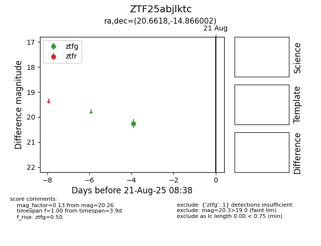

Target ZTF25abjlktc at 2025-08-21 08:38, see:
FINK: fink-portal.org/ZTF25abjlktc
Lasair: lasair-ztf.lsst.ac.uk/objects/ZTF25abjlktc
ALeRCE: alerce.online/object/ZTF25abjlktc
alt names
ZTF25abjlktc (ztf,alerce)
coordinates:
equatorial (ra, dec) = (20.6618,-14.86600)
galactic (l, b) = (155.1387,-75.74799)
photometry
last ztfg=20.26
1 ztfg detections
